21. Cross-domain access management
21.1. Architecture
We will now examine the issue of cross-domain requests. In the document [AngularJS / Spring 4 Tutorial], we develop a client/server application where the client is an AngularJS application:
 |
- the HTML/CSS/JS pages of the Angular application come from the server [1];
- in [2], the [dao] service makes a request to another server, server [2]. Well, this is prohibited by the browser running the Angular application because it is a security vulnerability. The application can only query the server from which it originates, i.e., server [1];
In fact, it is inaccurate to say that the browser prevents the Angular application from querying server [2]. The browser actually queries server [2] to determine whether it allows a client that does not originate from its own domain to query it. This sharing technique is called CORS (Cross-Origin Resource Sharing). Server [2] grants permission by sending specific HTTP headers.
To demonstrate the issues that can arise, we will create a client/server application where:
- the server will be our secure web/JSON server;
- the client will be a simple HTML page equipped with JavaScript code that will make requests to the web/JSON server;
We will implement the following architecture:
 |
- in [1], a web application delivers HTML/JS pages;
- in [2], the browser executes the JavaScript embedded in the HTML pages to query the secure web service [3];
21.2. The [spring-cors-server-jdbc-generic] project
21.2.1. Setting up the development environment
 |
- Download the projects listed above. The [spring-cors-*] projects can be found in the folder [<examples>\spring-database-generic\spring-cors];
- Press Alt-F5 and rebuild all Maven projects;
Then run the run configuration named [spring-cors-server-jdbc-generic] (the MySQL database must be running), which starts a web service on port 8081:
 |
Populate the [dbproduitscategories] database using the runtime configuration named [spring-jdbc-generic-04-fillDataBase]:
 |
Run the runtime configuration named [spring-cors-client-generic], which launches a second web application (on another Tomcat instance) on port 8082:
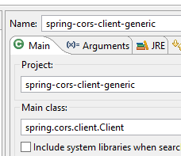 |
Using a browser, request the URL [http://localhost:8082/client.html]:
 |
- In [1], we request the short version of all categories;
- in [2], the server’s JSON response;
21.2.2. The client project [spring-cors-client-generic]
 |
 |
The [application.properties] file allows us to set the port for the client web application. Its contents are as follows:
server.port=8082
Thus:
- the client is a web application available at the URL [http://localhost:8082];
- the server is a web application available at the URL [http://localhost:8081];
Because the client is not accessed via the same port as the server, the issue of cross-domain requests arises. Indeed, [http://localhost:8081] and [http://localhost:8082] are two different domains.
21.2.3. Maven Configuration
The project is a Maven project with the following [pom.xml] file:
<?xml version="1.0" encoding="UTF-8"?>
<project xmlns="http://maven.apache.org/POM/4.0.0" xmlns:xsi="http://www.w3.org/2001/XMLSchema-instance"
xsi:schemaLocation="http://maven.apache.org/POM/4.0.0 http://maven.apache.org/xsd/maven-4.0.0.xsd">
<modelVersion>4.0.0</modelVersion>
<groupId>dvp.spring.database</groupId>
<artifactId>spring-cors-client-generic</artifactId>
<version>0.0.1-SNAPSHOT</version>
<packaging>jar</packaging>
<name>spring-cors-client-generic</name>
<description>CORS client for WebJSON server</description>
<parent>
<groupId>org.springframework.boot</groupId>
<artifactId>spring-boot-starter-parent</artifactId>
<version>1.2.3.RELEASE</version>
<relativePath /> <!-- lookup parent from repository -->
</parent>
<properties>
<project.build.sourceEncoding>UTF-8</project.build.sourceEncoding>
<java.version>1.7</java.version>
</properties>
<dependencies>
<dependency>
<groupId>org.springframework.boot</groupId>
<artifactId>spring-boot-starter-web</artifactId>
</dependency>
</dependencies>
<!-- plugins -->
<build>
<plugins>
<plugin>
<groupId>org.springframework.boot</groupId>
<artifactId>spring-boot-maven-plugin</artifactId>
</plugin>
<plugin>
<artifactId>maven-assembly-plugin</artifactId>
<configuration>
<descriptorRefs>
<descriptorRef>jar-with-dependencies</descriptorRef>
</descriptorRefs>
</configuration>
</plugin>
<plugin>
<groupId>org.apache.maven.plugins</groupId>
<artifactId>maven-surefire-plugin</artifactId>
<version>2.18.1</version>
</plugin>
</plugins>
</build>
</project>
- lines 14–19: this is a Spring Boot project;
- lines 27–30: we use the [spring-boot-starter-web] dependency, which includes a Tomcat server and Spring MVC;
21.2.4. Basics of jQuery and JavaScript
 |
The web application delivers the following single page:
 |
It includes JavaScript (JS) code that runs in the browser. We’ll cover some JavaScript basics to help us understand the code. The client will make HTTP requests using the jQuery library [https://jquery.com/], which provides many functions that simplify JavaScript development. We create a static HTML file [jQuery.html] and place it in the [static] folder:
 |
This file will have the following content:
<!DOCTYPE html>
<html xmlns="http://www.w3.org/1999/xhtml">
<head>
<meta http-equiv="Content-Type" content="text/html; charset=utf-8" />
<title>JQuery-01</title>
<script type="text/javascript" src="/js/jquery-2.1.3.min.js"></script>
</head>
<body>
<h3>JQuery Basics</h3>
<div id="element1">
Element 1
</div>
</body>
</html>
- line 6: importing jQuery;
- lines 10–12: a page element with the ID [element1]. We’re going to work with this element.
We need to download the file [jquery-2.1.3.min.js]. You can find the latest version of jQuery at the URL [http://jquery.com/download/]:
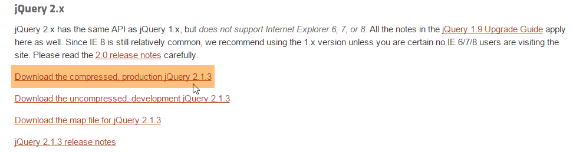
We’ll place the downloaded file in the [static/js] folder:
|
Once that’s done, open the static view [jQuery.html] in Chrome [1-2]:
 |
In Google Chrome, press [Ctrl-Shift-I] to open the developer tools [3]. The [Console] tab [4] allows you to run JavaScript code. Below, we provide JavaScript commands to type and explain what they do.
| |
: returns the collection of all elements with the id [element1], so normally a collection of 0 or 1 element because you cannot have two identical IDs on an HTML page. |  |
: assigns the text [blabla] to all elements in the collection. This changes the content displayed by the page |   |
hides the elements in the collection. The text [blabla] is no longer displayed. |   |
: displays the collection again. This allows us to see that the element with the ID [element1] has the CSS attribute style='display: none;', which the element to be hidden. |  |
: displays the elements in the collection. The text [blabla] appears again. It is the style='display: block;' that ensures this display. |   |
: sets an attribute on all elements in the collection. The attribute here is [style] and its value [color: red]. The text [blabla] turns red. |  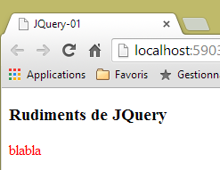 |
|  |
|  |
Note that the browser's URL did not change during all these operations. There was no communication with the web server. Everything happens within the browser. Now, let's view the page's source code:
<!DOCTYPE html>
<html xmlns="http://www.w3.org/1999/xhtml">
<head>
<meta http-equiv="Content-Type" content="text/html; charset=utf-8" />
<title>JQuery-01</title>
<script type="text/javascript" src="/js/jquery-1.11.1.min.js"></script>
</head>
<body>
<h3>JQuery Basics</h3>
<div id="element1">
Element 1
</div>
</body>
</html>
This is the original text. It does not reflect the changes made to the element in lines 10–12. It is important to keep this in mind when debugging JavaScript. In such cases, it is often unnecessary to view the source code of the displayed page.
21.2.5. The application's JavaScript code
Let’s return to the HTML code of the client application page that will query the web service / JSON:
|
<!DOCTYPE html>
<html>
<head>
<meta charset="UTF-8">
<title>Spring MVC</title>
<script type="text/javascript" src="/js/jquery-2.1.1.min.js"></script>
<script type="text/javascript" src="/js/client.js"></script>
</head>
<body>
<h2>Web service client / JSON</h2>
<form id="form">
<!-- HTTP method -->
HTTP method:
<!-- -->
<input type="radio" id="get" name="method" value="get" checked="checked" />GET
<!-- -->
<input type="radio" id="post" name="method" value="post" />POST
<!-- URL -->
<br /> <br />Target URL: <input type="text" id="url" size="30"><br/>
<!-- posted value -->
<br /> JSON string to post: <input type="text" id="posted" size="50" />
<!-- Submit button -->
<br /> <br /> <input type="submit" value="Submit" onclick="javascript:requestServer(); return false;"></input>
</form>
<hr />
<h2>Server response</h2>
<div id="response"></div>
</body>
</html>
- line 6: we import the jQuery library;
- line 7: we import code that we will write;
- Lines 11, 15, 17, 21: Note the [id] identifiers of the page components. The JavaScript references these components via these identifiers;
The [client.js] code is as follows:
// global variables
var url;
var posted;
var response;
var method;
function requestServer() {
// retrieve the form data
var urlValue = url.val();
var postedValue = posted.val();
method = document.forms[0].elements['method'].value;
// make an Ajax call manually
if (method === "get") {
doGet(urlValue);
} else {
doPost(urlValue, postedValue);
}
}
function doGet(url) {
// make an Ajax call manually
$.ajax({
headers: {
'Authorization' : 'Basic YWRtaW46YWRtaW4='
},
url: 'http://localhost:8081' + url,
type: 'GET',
dataType: 'text/plain',
beforeSend: function() {
},
success: function(data) {
// text result
response.text(data);
},
complete: function() {
},
error: function(jqXHR) {
// system error
response.text(jqXHR.responseText);
}
})
}
function doPost(url, posted) {
// We make an Ajax call manually
$.ajax({
headers: {
'Authorization' : 'Basic YWRtaW46YWRtaW4='
},
url: 'http://localhost:8081 ' + url,
type: 'POST',
contentType: 'application/json',
data: posted,
dataType: 'text/plain',
beforeSend: function() {
},
success: function(data) {
// text result
response.text(data);
},
complete: function() {
},
error: function(jqXHR) {
// system error
response.text(jqXHR.responseText);
}
})
}
// on document load
$(document).ready(function() {
// retrieve the references of the page components
url = $("#url");
posted = $("#posted");
response = $("#response");
});
- lines 71–75: JavaScript code executed after the document has finished loading in the browser;
- lines 73-75: retrieves the references of three elements in the HTML document;
- lines 2-5: global variables known throughout all functions defined in the JavaScript file;
- line 9: retrieves the URL entered by the user;
- line 10: retrieves the value the user wants to post;
- line 11: retrieves the method [get] or [post] to use when requesting the URL from line 9:
- document refers to the document loaded by the browser, known as the DOM (Document Object Model),
- document.forms[0] refers to the first form in the document; a document may contain multiple forms. Here, there is only one;
- document.forms[0].elements['method'] refers to the form element with the [name='method'] attribute. There are two:
<input type="radio" id="get" name="method" value="get" checked="checked" />GET
<input type="radio" id="post" name="method" value="post" />POST
- (continued)
- document.forms[0].elements['method'].value is the value that will be posted for the component with the [name='method'] attribute. We know that the posted value is the value of the [value] attribute of the checked radio button. Here, it will therefore be one of the strings ['get', 'post'];
- Lines 13–18: Depending on the HTTP method to be used, either the [doGet] or [doPost] method is executed;
- The jQuery method [$.ajax] makes an HTTP request;
- lines 23–25: We are communicating with a server that requires an HTTP header [Authorization: Basic code]. We create this header for the user [admin / admin], who is the only one authorized to query the server;
- line 26: the user will enter URLs of the form [/getAllLongCategories, /saveCategories, ...]. These URLs must therefore be completed;
- line 27: HTTP method to use;
- line 28: the server returns JSON. We specify the type [text/plain] as the response type so that it is displayed exactly as received;
- line 33: display the server's text response;
- line 39: display any error message in text format;
- line 44: the [doPost] method receives a second parameter, which is the value to be posted;
- line 52: to indicate that the posted value will be in the form of a JSON string;
21.2.6. Client Execution
The client application is a console application launched by the following executable [Client] class:
 |
package spring.cors.client;
import org.springframework.boot.SpringApplication;
import org.springframework.boot.autoconfigure.EnableAutoConfiguration;
@EnableAutoConfiguration
public class Client {
public static void main(String[] args) {
SpringApplication.run(Client.class, args);
}
}
- Line 6: The [@EnableAutoConfiguration] annotation is an annotation of the [Spring Boot] project (line 4). Spring Boot will inspect the archives present in the project's classpath. In this case, these will be all the Maven dependencies provided by the single dependency in the [pom.xml] file:
<dependencies>
<dependency>
<groupId>org.springframework.boot</groupId>
<artifactId>spring-boot-starter-web</artifactId>
</dependency>
</dependencies>
This dependency includes a large number of libraries, notably Spring MVC and a Tomcat server. Because of these dependencies, Spring Boot will configure a Spring MVC project running on Tomcat using default values. The Tomcat server is then configured to run on port 8080. If you want to override the default values chosen by Spring Boot, you can use the [application.properties] file at the root of the classpath (everything in [src/main/resources] is at the root of the classpath):
 |
We specify that the Tomcat server should run on port 8082 as follows:
server.port=8082
A list of parameters that can be used in [application.properties] is available at the URL (June 2015) [http://docs.spring.io/spring-boot/docs/current/reference/html/common-application-properties.html];
Back to the code in [Client.java]:
- line 10: the [SpringApplication.run] method will deploy the [client.html] page to the Tomcat server present in the project’s classpath;
21.2.7. The URL [/getAllShortCategories]
 |
We launch:
- the secure web/JSON server on port 8081 (configuration [spring-security-server-jdbc-generic]);
- the client for this server on port 8082 (configuration [spring-cors-client-generic]);
then we request the URL [http://localhost:8082/client.html] [1]:
 |
- in [2], we perform a GET request on the URL [http://localhost:8081/getAllShortCategories];
We do not receive a response from the server. When we look at the Chrome developer console (Ctrl-Shift-I), we see an error:
 |
- in [1], we are in the [Network] tab;
- In [2], we see that the HTTP request made is not [GET] but [OPTIONS]. In the case of a cross-domain request, the browser checks with the server to ensure that certain conditions are met by sending an HTTP [OPTIONS] request. In this instance, the requests are those indicated by the dots [5-6];
- In [5], the browser asks whether the target URL can be reached with a GET. The [Access-Control-Request-Method] request asks for a response with an [Access-Control-Allow-Methods] HTTP header indicating that the requested method is accepted;
- in [6], the browser sends the HTTP header [Origin: http://localhost:8081]. This header requests a response in an HTTP header [Access-Control-Allow-Origin] indicating that the specified origin is accepted;
- In [7], the browser asks whether the HTTP headers [Accept] and [Authorization] are accepted. The [Access-Control-Request-Headers] request expects a response with an HTTP header [Access-Control-Allow-Headers] indicating that the requested headers are accepted;
- an error occurs in [3]. Clicking the icon results in error [4];
- In [4], the message indicates that the server did not send the [Access-Control-Allow-Origin] HTTP header, which specifies whether the origin of the request is accepted;
- in [8], we can see that the server did indeed not send this header. As a result, the browser refused to make the HTTP GET request that was initially requested;
We need to modify the web server / JSON.
21.2.8. A new web service / JSON
We are creating a new Maven project [spring-cors-server-jdbc-generic]:
 |
The Maven configuration for the new web service is as follows:
<project xmlns="http://maven.apache.org/POM/4.0.0" xmlns:xsi="http://www.w3.org/2001/XMLSchema-instance"
xsi:schemaLocation="http://maven.apache.org/POM/4.0.0 http://maven.apache.org/xsd/maven-4.0.0.xsd">
<modelVersion>4.0.0</modelVersion>
<groupId>dvp.spring.database</groupId>
<artifactId>spring-cors-server-jdbc-generic</artifactId>
<version>0.0.1-SNAPSHOT</version>
<name>spring-cors-server-jdbc-generic</name>
<description>Spring CORS demo</description>
<parent>
<groupId>org.springframework.boot</groupId>
<artifactId>spring-boot-starter-parent</artifactId>
<version>1.2.3.RELEASE</version>
</parent>
<!-- plugins -->
<build>
<plugins>
<plugin>
<groupId>org.apache.maven.plugins</groupId>
<artifactId>maven-surefire-plugin</artifactId>
<version>2.18.1</version>
</plugin>
</plugins>
</build>
<dependencies>
<dependency>
<groupId>dvp.spring.database</groupId>
<artifactId>spring-security-server-jdbc-generic</artifactId>
<version>0.0.1-SNAPSHOT</version>
</dependency>
</dependencies>
</project>
- Lines 30–32: We retrieve all the data from the work done so far by accessing the secure JSON archive on the web server;
In the end, the dependencies are as follows:
 |
The configuration class [AppConfig] is as follows:
 |
package spring.cors.server.config;
import javax.annotation.PostConstruct;
import org.springframework.beans.factory.annotation.Autowired;
import org.springframework.context.annotation.Bean;
import org.springframework.context.annotation.ComponentScan;
import org.springframework.context.annotation.Configuration;
import org.springframework.context.annotation.Import;
import org.springframework.web.servlet.DispatcherServlet;
@Configuration
@ComponentScan(basePackages = { "spring.cors.server.service" })
@Import({ spring.security.config.AppConfig.class })
public class AppConfig {
// cross-domain requests
@Bean
public boolean isCorsEnabled() {
return true;
}
...
}
- line 12: the class is a Spring configuration class;
- line 9: other Spring components can be found in the [spring.cors.server.service] package;
- line 14: we import the beans from the [spring-security-server-jdbc-generic] project;
- lines 18–21: we create a Spring component named [isCorsEnabled] that indicates whether or not clients outside the server’s domain are accepted;
21.2.9. The controllers
The new web service has four controllers:
 |
- [CorsCategorieController] handles category processing URLs. It only manages CORS headers from web clients. Otherwise, it delegates the work to the [CategorieController] in the [spring-webjson-server-jdbc-generic] dependency;
- [CorsProductController] and [CorsAuthenticateController] do the same by delegating the work to the [ProductController] in the [spring-webjson-server-jdbc-generic] dependency and the [AuthenticateController] in the [spring-security-server-jdbc-generic] dependency;
- [CorsController] is used to factor out what is common to the three previous controllers;
21.2.9.1. The [CorsController]
The [CorsController] class is as follows:
package spring.cors.server.service;
import javax.servlet.http.HttpServletResponse;
import org.springframework.beans.factory.annotation.Autowired;
import org.springframework.stereotype.Component;
@Component
public class CorsController {
@Autowired
private boolean isCorsEnabled;
// Send options to the client
public void sendOptions(String origin, HttpServletResponse response) {
// Is CORS allowed?
if (!isCorsEnabled || origin == null || !origin.startsWith("http://localhost")) {
return;
}
// Set the CORS header
response.addHeader("Access-Control-Allow-Origin", origin);
// allow certain headers
response.addHeader("Access-Control-Allow-Headers", "accept, authorization");
// Allow GET
response.addHeader("Access-Control-Allow-Methods", "GET");
}
}
- line 8: the [CorsController] class is a Spring controller;
- lines 11-12: injection of the [isCorsEnabled] bean, which indicates whether or not to handle CORS headers;
- lines 15–26: the [sendOptions] method handles responses to clients sending CORS headers;
- lines 17-19: if the application is configured to accept cross-domain requests, and if the sender has sent the [Origin] HTTP header, and if that origin starts with [http://localhost], then the cross-domain request is accepted; otherwise, it is rejected;
- line 21: if the client is in the domain [http://localhost:port], we send the HTTP header:
Access-Control-Allow-Origin: http://localhost:port
which means that the server accepts the client's origin;
- lines 22–25: we have specified two specific HTTP headers in the [OPTIONS] HTTP request:
Access-Control-Request-Method: GET
Access-Control-Request-Headers: accept, authorization
In response to the [Access-Control-Request-X] HTTP header, the server responds with an [Access-Control-Allow-X] HTTP header specifying what is allowed. Lines 22–25 simply repeat the client’s request to indicate that it is accepted;
21.2.9.2. The controller [CorsCategorieController]
package spring.cors.server.service;
import java.util.List;
import javax.servlet.http.HttpServletRequest;
import javax.servlet.http.HttpServletResponse;
import org.springframework.beans.factory.annotation.Autowired;
import org.springframework.web.bind.annotation.RequestHeader;
import org.springframework.web.bind.annotation.RequestMapping;
import org.springframework.web.bind.annotation.RequestMethod;
import org.springframework.web.bind.annotation.RestController;
import spring.jdbc.entities.Category;
import spring.webjson.server.entities.CoreCategory;
import spring.webjson.server.service.CategoryController;
import spring.webjson.server.service.Response;
@RestController
public class CategoryController extends CorsController {
@Autowired
private CategorieController categoryController;
@RequestMapping(value = "/cors-getAllShortCategories", method = RequestMethod.OPTIONS)
public void getAllShortCategories(@RequestHeader(value = "Origin", required = false) String origin,
HttpServletResponse response) {
sendOptions(origin, response);
}
@RequestMapping(value = "/cors-getAllShortCategories", method = RequestMethod.GET)
public Response<List<Category>> getAllShortCategories(
@RequestHeader(value = "Origin", required = false) String origin, HttpServletResponse response) {
// original method
return categoryController.getAllShortCategories();
}
...
}
- line 19: the [@RestController] annotation makes the class both a Spring component and an MVC controller that sends its own responses to the client;
- Line 20: The [CorsCategorieController] class extends the [CorsController] class we just saw;
- lines 22–23: injection of the [CategorieController] controller from the [spring-webjson-server-jdbc-generic] dependency;
- lines 25–29: handle the URL [/cors-getAllShortCategories] when it is requested with the HTTP [OPTIONS] method. By convention, we decide that web clients wishing to call the [/U] URL of the secure web service must actually call the [/cors-U] URL. The deployed web service will thus have two types of URLs:
- [/U]: for non-web clients;
- [/cors-U]: for web clients;
- line 25: the [/cors-getAllShortCategories] method accepts the following parameters:
- the object [@RequestHeader(value = "Origin", required = false)], which retrieves the HTTP [Origin] header from the request. This header was sent by the request origin:
Origin:http://localhost:8082
We specify that the [Origin] HTTP header is optional [required = false]. In this case, if the header is missing, the [String origin] parameter will have a null value. With [required = true], which is the default value, an exception is thrown if the header is missing. We wanted to avoid this scenario;
- (continued)
- the [HttpServletResponse response] object that will be returned to the client who made the request;
These two parameters are injected by Spring;
- line 28: we delegate the handling of the request to the [sendOptions] method of the parent class [CorsController];
- lines 31–36: the [getAllShortCategories] method handles the URL [/cors-getAllShortCategories] when it is requested with a GET;
- Line 35: The work is delegated to the [CategorieController.getAllShortCategories] method of the [spring-webjson-server-jdbc-generic] dependency;
We are now ready for further testing. We launch the new version of the web service and find that the problem remains unchanged. Nothing has changed. If we add a console output on line 28 above, it is never displayed, indicating that the [corsGetAllShortCategories] method on line 25 is never called.
After some research, we discover that Spring MVC handles [OPTIONS] HTTP requests itself using default handling. Therefore, it is always Spring that responds, and never the [corsGetAllShortCategories] method on line 25. This default behavior of Spring MVC can be changed. We modify the existing [AppConfig] class:
|
package spring.cors.server.config;
import javax.annotation.PostConstruct;
import org.springframework.beans.factory.annotation.Autowired;
import org.springframework.context.annotation.Bean;
import org.springframework.context.annotation.ComponentScan;
import org.springframework.context.annotation.Configuration;
import org.springframework.context.annotation.Import;
import org.springframework.web.servlet.DispatcherServlet;
@Configuration
@ComponentScan(basePackages = { "spring.cors.server.service" })
@Import({ spring.security.config.AppConfig.class })
public class AppConfig {
// cross-domain requests
@Bean
public boolean isCorsEnabled() {
return true;
}
@Autowired
private DispatcherServlet dispatcherServlet;
@PostConstruct
public void init(){
// the application handles HTTP requests itself [OPTIONS]
dispatcherServlet.setDispatchOptionsRequest(true);
}
}
- lines 23-24: we inject the [DispatcherServlet dispatcherServlet] component, which was defined in the [spring-webjson-server-jdbc-generic] dependency;
- lines 26-30: the [@PostConstruct] annotation ensures that the [init] method will be executed after the [AppConfig] class is instantiated and after Spring has performed its injections;
- line 29: we configure the servlet to forward [OPTIONS] HTTP requests to the application;
We rerun the tests with this new configuration. We get the following result:
 |
- in [1], we see that there are two HTTP requests to the URL [http://localhost:8080/getAllCategories];
- in [2], the [OPTIONS] request;
- in [3], the three HTTP headers we just configured in the server’s response;
Let us now examine the second claim:
 |
- in [1], the request under consideration;
- in [2], this is the GET request. Thanks to the first [OPTIONS] request, the browser received the information it requested. It now performs the [GET] request that was initially requested;
- in [3], the server's response;
- in [4], the server sends JSON;
- in [5], an error occurred;
- in [6], the error message;
It is more difficult to explain what happened here. The server’s response [3] is normal [HTTP/1.1 200 OK]. We should therefore have the requested document. It is possible that the server did indeed send the document but that the browser is preventing its use because it requires that, for the GET request as well, the response include the HTTP header [Access-Control-Allow-Origin:http://localhost:8081].
We modify the method that handles the GET request for the URL [/cors-getAllShortCategories]:
@RequestMapping(value = "/cors-getAllShortCategories", method = RequestMethod.GET)
public Response<List<Category>> getAllShortCategories(
@RequestHeader(value = "Origin", required = false) String origin, HttpServletResponse response) {
// CORS headers
sendOptions(origin, response);
// original method
return categoryController.getAllShortCategories();
}
- line 5: as with the HTTP [OPTIONS] request, the server will send the CORS HTTP headers for an HTTP [GET] request;
After this change, the results are as follows:
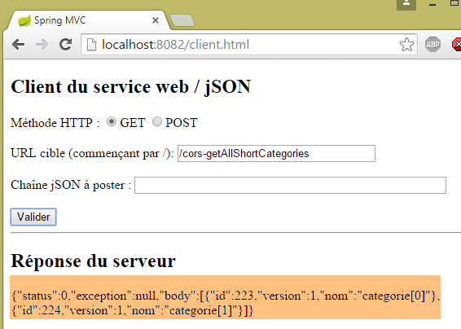 |
We have successfully obtained the short version of all categories.
21.2.9.3. The [GET] URLs
In the controllers [CorsCategorieController, CorsProduitController, CorsAuthenticateController], the code for the actions that handle the requested [GET] URLs follows the pattern of the actions that previously handled the URL [/cors-getAllShortArticles]. The reader can verify the code in the examples provided with this document. Here is an example for the [/cors-getAllLongProduits] URL in the [CorsProduitController] controller:
package spring.cors.server.service;
import java.util.List;
import javax.servlet.http.HttpServletRequest;
import javax.servlet.http.HttpServletResponse;
import org.springframework.beans.factory.annotation.Autowired;
import org.springframework.web.bind.annotation.RequestHeader;
import org.springframework.web.bind.annotation.RequestMapping;
import org.springframework.web.bind.annotation.RequestMethod;
import org.springframework.web.bind.annotation.RestController;
import spring.jdbc.entities.Product;
import spring.webjson.server.entities.CoreProduct;
import spring.webjson.server.service.ProductController;
import spring.webjson.server.service.Response;
@RestController
public class ProductController extends Controller {
@Autowired
private ProduitController productController;
@RequestMapping(value = "/cors-getAllLongProducts", method = RequestMethod.GET)
public Response<List<Product>> getAllLongProducts(@RequestHeader(value = "Origin", required = false) String origin, HttpServletResponse response) {
// CORS headers
sendOptions(origin, response);
// origin method
return productController.getAllLongProducts();
}
@RequestMapping(value = "/cors-getAllLongProduits", method = RequestMethod.OPTIONS)
public void getAllProducts(@RequestHeader(value = "Origin", required = false) String origin,
HttpServletResponse response) {
sendOptions(origin, response);
}
...
}
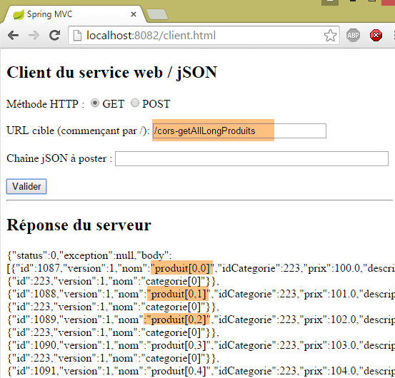 |
21.2.9.4. [POST] URLs
Let's consider the following scenario:
 |
- We make a POST [1] to the URL [2];
- in [3], the posted value. This is the JSON string for a category with no products;
- Ultimately, we want to create a category named [category[2]];
We are not modifying any code at this point. The result obtained is as follows:
 |
- in [1], as with [GET] requests, an [OPTIONS] request is made by the browser;
- in [2], it requests access authorization for a [POST] request. Previously, it was [GET];
- In [3], it requests authorization to send the HTTP headers [accept, authorization, content-type]. Previously, we only had the first two headers;
- in [4], the web service does not grant all the requested permissions, which causes error [5];
We modify the [CorsController.sendOptions] method as follows:
public void sendOptions(String origin, HttpServletResponse response) {
// Is CORS allowed?
if (!isCorsEnabled || origin == null || !origin.startsWith("http://localhost")) {
return;
}
// Set the CORS header
response.addHeader("Access-Control-Allow-Origin", origin);
// allow certain headers
response.addHeader("Access-Control-Allow-Headers", "accept, authorization, content-type");
// allow GET and POST
response.addHeader("Access-Control-Allow-Methods", "GET, POST");
}
}
- line 9: we added the HTTP header [Content-Type] (case is not sensitive);
- line 11: we added the HTTP method [POST];
This means that [POST] methods are handled the same way as [GET] requests. Here is an example of the URL [/cors-saveCategories] in the [CorsCategorieController] controller:
@RequestMapping(value = "/cors-saveCategories", method = RequestMethod.POST, consumes = "application/json; charset=UTF-8")
public Response<List<CoreCategorie>> saveCategories(HttpServletRequest request,
@RequestHeader(value = "Origin", required = false) String origin, HttpServletResponse response) {
// CORS headers
sendOptions(origin, response);
// origin method
return categoryController.saveCategories(request);
}
@RequestMapping(value = "/cors-saveCategories", method = RequestMethod.OPTIONS)
public void corsSaveCategories(@RequestHeader(value = "Origin", required = false) String origin,
HttpServletResponse response) {
sendOptions(origin, response);
}
With these changes made, the result is as follows:
 |
The category [categorie[2]] has been successfully added to the database. The DBMS has assigned it the primary key 226. This can be verified using the GET method [/cors-getAllShortCategories]:
 |
21.2.10. Conclusion
Our application now supports cross-domain requests. These can be enabled or disabled via configuration in the [AppConfig] class:
package spring.cors.server.config;
...
@Configuration
@ComponentScan(basePackages = { "spring.cors.server.service" })
@Import({ spring.security.config.AppConfig.class })
public class AppConfig {
// cross-domain requests
@Bean
public boolean isCorsEnabled() {
return true;
}
...
}
21.3. The Eclipse project [spring-cors-server-jpa-generic]
The CORS web service will now be implemented by the [spring-cors-server-jpa-generic] project, which is based on the [spring-security-server-jpa-generic] project that manages database access using Spring Data JPA:
 |
The [spring-cors-server-jpa-generic] project is created by cloning the previously studied [spring-cors-server-jdbc-generic] project.
 |
Next, there are two changes to make. The first is in the [pom.xml] file:
<project xmlns="http://maven.apache.org/POM/4.0.0" xmlns:xsi="http://www.w3.org/2001/XMLSchema-instance"
xsi:schemaLocation="http://maven.apache.org/POM/4.0.0 http://maven.apache.org/xsd/maven-4.0.0.xsd">
<modelVersion>4.0.0</modelVersion>
<groupId>dvp.spring.database</groupId>
<artifactId>spring-cors-server-jpa-generic</artifactId>
<version>0.0.1-SNAPSHOT</version>
<name>spring-cors-server-jpa-generic</name>
<description>Spring CORS demo</description>
<parent>
<groupId>org.springframework.boot</groupId>
<artifactId>spring-boot-starter-parent</artifactId>
<version>1.2.3.RELEASE</version>
</parent>
<!-- plugins -->
<build>
<plugins>
<plugin>
<groupId>org.apache.maven.plugins</groupId>
<artifactId>maven-surefire-plugin</artifactId>
<version>2.18.1</version>
</plugin>
</plugins>
</build>
<dependencies>
<dependency>
<groupId>dvp.spring.database</groupId>
<artifactId>spring-security-server-jpa-generic</artifactId>
<version>0.0.1-SNAPSHOT</version>
</dependency>
</dependencies>
</project>
- lines 30–32: the dependency on the secure web service [spring-security-server-jpa-generic];
In the end, the project dependencies are as follows:
 |
Note: Press Alt-F5 and then regenerate all projects
The second change is to update the imports in the classes that are reporting errors [Alt-Shift-O].
That’s it. We start the CORS web service with the runtime configuration [spring-cors-server-jpa-generic-hibernate-eclipselink]:
 | 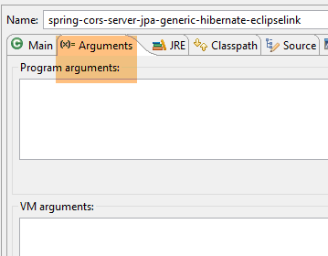 |
Then launch the generic client:
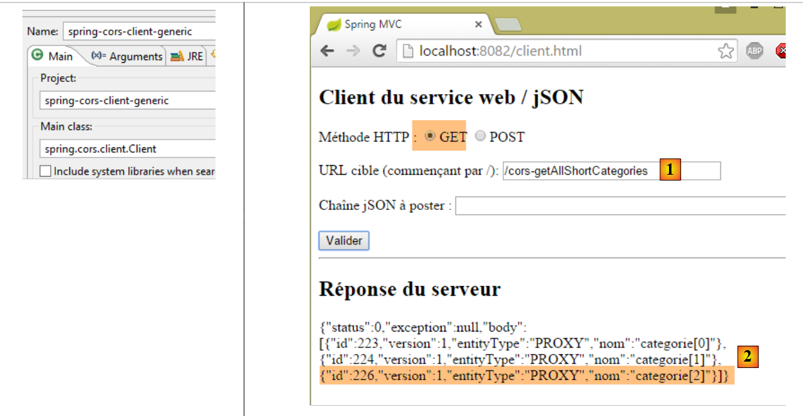 |
and using a browser, request the URL [1] with a GET. In [2], we see that the short version of the returned categories has the [entityType] field, which was missing in the previous JDBC version.
We will now cover two other CORS architectures:
- CORS / JPA EclipseLink / DB2 architecture;
- CORS / JPA OpenJpa / Firebird architecture;
21.4. CORS / JPA EclipseLink / DB2 architecture
We will implement the following architecture:
 |
Load the following projects:
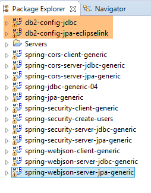 |
Note: Press Alt-F5 and regenerate all Maven projects.
Start the DB2 database and verify that the [dbproduitscategories] database exists. If not, create it (section 12.1.2).
We create users in the [dbproduitscategories] database using the [spring-security-create-users-hibernate-eclipselink] runtime configuration:
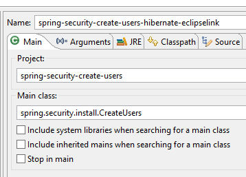 |  |
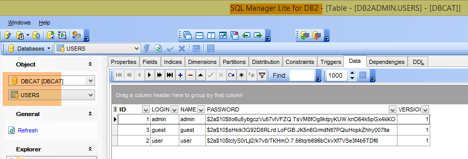
Then start the CORS web service using the runtime configuration named [spring-cors-server-jpa-generic-hibernate-eclipselink] and its client named [spring-cors-client-generic]:
 | 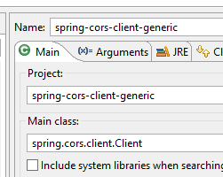 |
Populate the [dbproduitscategories] database with values using the runtime configuration [spring-jdbc-generic-04-fillDataBase]:
 |
Finally, request the following URL in a browser:
 |
21.5. CORS / JPA OpenJPA / Firebird Architecture
We will now implement the following architecture:
 |
Load the following projects:
 |
Note: Press Alt-F5 and regenerate all Maven projects.
Start the Firebird DBMS and verify that the [dbproduitscategories] database exists. If not, create it (section 14.1.2).
We create users in the [dbproduitscategories] database using the [spring-security-create-users-openjpa] runtime configuration:
 |  |

Then start the CORS web service with the runtime configuration named [spring-cors-server-jpa-generic-openjpa]:
 |  |
Start the CORS client using the [spring-cors-client-generic] configuration:
 |
Populate the [dbproduitscategories] database with values using the [spring-jdbc-generic-04-fillDataBase] runtime configuration:
|
Finally, request the following URL in a browser:
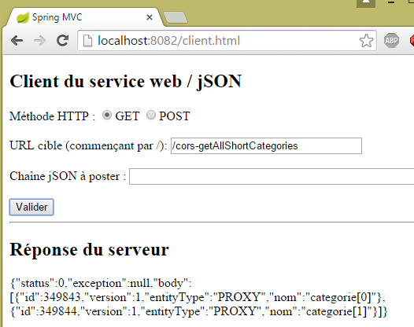 |